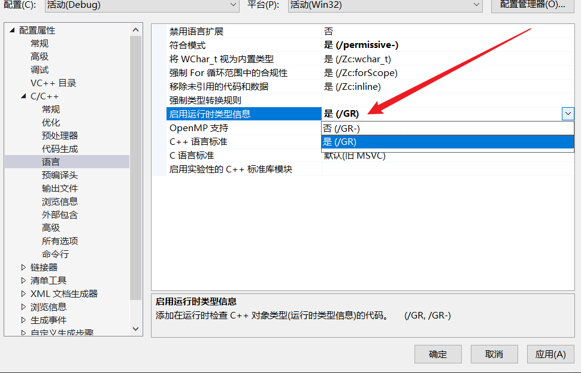
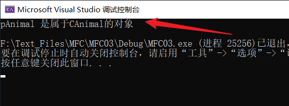
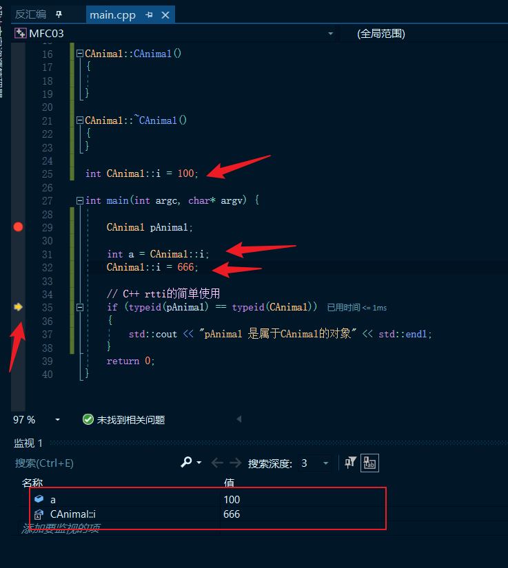
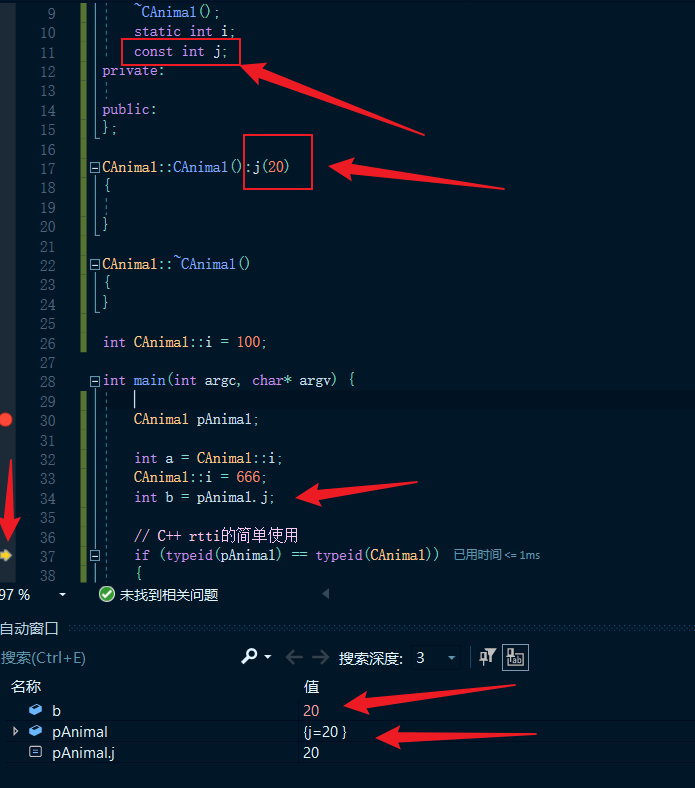
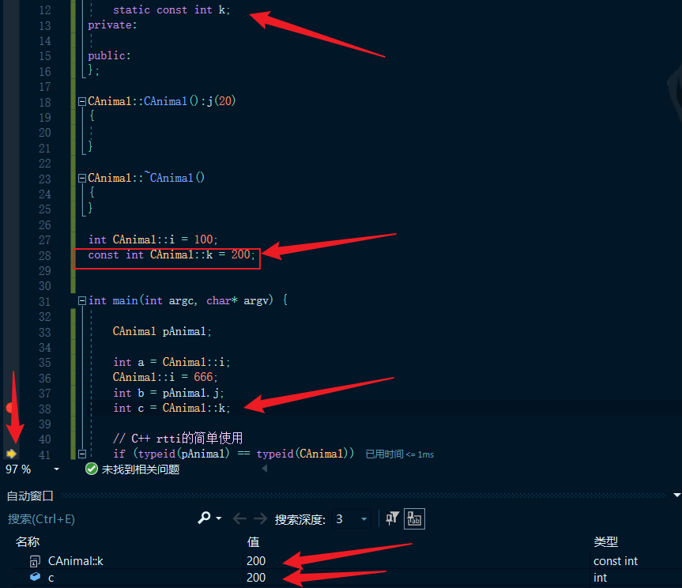
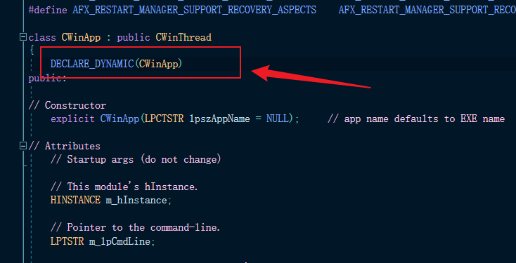
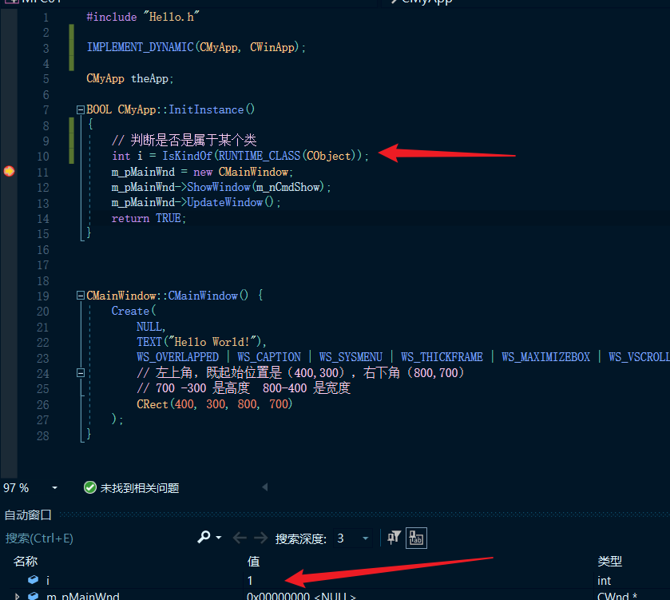
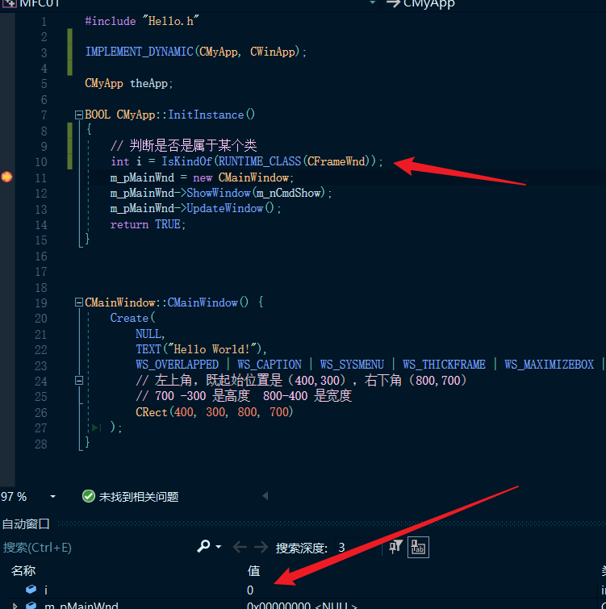
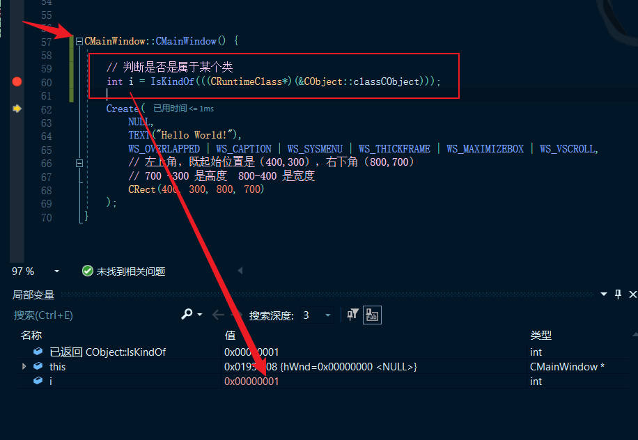
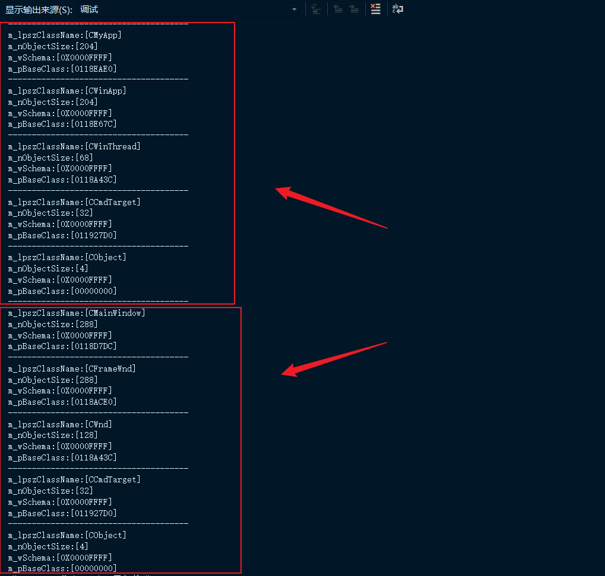

# 什么是 RTTI
MFC 运行时类型识别（英文：Runtime Type Information，缩写：RTTI），能够使用基类的指针或引用来检查这些指针或引用所指的对象的实际派生类，简单的意思就是它可以帮助我们在程序运行的过程中了解到某个对象所属类。
简单的来讲运行时类型识别（RTTI）即是在程序运行的过程中实现对对象类型的识别，因为在大多数情况下，程序中的对象等都是在编译时就已知该对象的数据类型，所以要实现运行时对象类型识别则就需要花费一番心思。
# 本节需要掌握的知识点
1、本节必须掌握的知识点
MFC 为什么要自己去构建 RTTI？
关键的宏：DECLARE_DYNAMICIMPLEMENT_DYNAMICRUNTIME_CLASS
关键的结构体 CRuntimeClass
2、需要简单了解的内容
static 关键字的作用const 关键字的作用
C++ RTTI typeid 操作符
# 使用编译器自带的 RTTI
这是 VS2019 的 RTTI：

但是后面我在测试使用 typeid 时发现开不开这个都行。
需要包含 typeinfo 头文件typeid(类名)typeid(对象)
如下代码简单用一下 typeid，我们定一个了一个类 CAnimal 并创建了一个对象 pAnimal，使用 typeid 进行比较发现两者都属于同一个类：
#include<iostream> | |
#include<typeinfo> | |
class CAnimal | |
{ | |
public: | |
CAnimal(); | |
~CAnimal(); | |
private: | |
public: | |
}; | |
CAnimal::CAnimal() | |
{ | |
} | |
CAnimal::~CAnimal() | |
{ | |
} | |
int main(int argc, char* argv) { | |
CAnimal pAnimal; | |
// C++ rtti 的简单使用 | |
if (typeid(pAnimal) == typeid(CAnimal)) | |
{ | |
std::cout << "pAnimal 是属于CAnimal的对象" << std::endl; | |
} | |
return 0; | |
} |
执行结果：

# static 关键词的作用
当用 static 关键词定义一个变量，该变量则存储在全局数据区而不是局部的，如果 static 关键词的变量为某类的成员，则该成员与类进行关联，但并不会与类创建的对象进行关联，也就表示我们不需要创建对象就可以使用这个成员，所以我们想要使用的话就要通过 类名::成员名 的方式去使用，并且我们不可以在类的内部去赋值初始化，只可以在外部。

# const 关键词的作用
使用 const 关键词定义的成员，同样没办法直接初始化，需要在初始化列表中进行初始化：

# static 和 const 关键词一起使用
如果一个成员使用了 static const 双关键词，我们还是按照 static 关键词的方法去使用，但是在初始化的时候需要加上 const 关键词：

# MFC 为什么要自己去构建 RTTI
在 MFC 出来的时候 C++ 并没有 RTTI 这个概念，所以 MFC 自己设计了这样一套东西，其依靠的就是两个宏： DECLARE_DYNAMIC 、 IMPLEMENT_DYNAMIC ，其中 IMPLEMENT_DYNAMIC 宏也包含了一个关键的宏 RUNTIME_CLASS 以及关键结构体 CRuntime Class 。
# MFC 中 RTTI 的本质
通过前面的介绍我们知道了 RTTI 的核心就是知道某个对象是属于某个类
这里我们继续使用前面我们手动创建 MFC 的代码：
Hello.h:
#pragma once | |
#define WIN32_LEAN_AND_MEAN | |
#include<afxwin.h> | |
class CMyApp:public CWinApp | |
{ | |
public: | |
virtual BOOL InitInstance(); | |
}; | |
class CMainWindow :public CFrameWnd { | |
public: | |
CMainWindow(); | |
}; |
Hello.cpp:
#include "Hello.h" | |
CMyApp theApp; | |
BOOL CMyApp::InitInstance() | |
{ | |
m_pMainWnd = new CMainWindow; | |
m_pMainWnd->ShowWindow(m_nCmdShow); | |
m_pMainWnd->UpdateWindow(); | |
return TRUE; | |
} | |
CMainWindow::CMainWindow() { | |
Create( | |
NULL, | |
TEXT("Hello World!"), | |
WS_OVERLAPPED | WS_CAPTION | WS_SYSMENU | WS_THICKFRAME | WS_MAXIMIZEBOX | WS_VSCROLL, | |
// 左上角，既起始位置是（400,300），右下角（800,700） | |
// 700 -300 是高度 800-400 是宽度 | |
CRect(400, 300, 800, 700) | |
); | |
} |
那么我们想知道我们的 theApp 是属于那个类的，我们该怎么做呢？
接下来我们参考 MFC 是如何实现 RTTI 的，我们跟着模仿一个。
我们先看一下 CWinApp 类:

F12 跟进去后可以看到宏 DECLARE_DYNAMIC
我们修改为我们的 DECLARE_DYNAMIC(CMyApp) , 但这个时候仍然无法编译，我们还缺少另一个宏 IMPLEMENT_DYNAMIC(CMyApp, CWinApp); ，把这句代码放到 Hello.cpp 中的 CMyApp theApp; 前面即可。
这样我们的代码就有了运行时类型识别的功能了。
接下来使用 IsKindOf() 函数。


如图所示，成功！
接下来了解几个宏。
# 宏 RUNTIME_CLASS
在 VS2019 中的宏定义为：
#define RUNTIME_CLASS(class_name) _RUNTIME_CLASS(class_name) | |
#define _RUNTIME_CLASS(class_name) ((CRuntimeClass*)(&class_name::class##class_name)) |
其中两个 #号则代表拼接符，一个 #号则表示转为字符串。
也就是说 RUNTIME_CLASS(CWinApp) 这一段代码可以转换为 ((CRuntimeClass*)(&CWinApp::classCWinApp))
这段代码代表着 取一个类的成员的地址并将其转化为 CRuntimeClass 类型的指针，而 CRuntimeClass 的结构如下：
# CRuntimeClass 结构体
在 VS2019 中的定义为：
struct CRuntimeClass | |
{ | |
// Attributes | |
LPCSTR m_lpszClassName; // 类名称 | |
int m_nObjectSize; // 类的大小 | |
UINT m_wSchema; // 加载类的模式编号 | |
CObject* (PASCAL* m_pfnCreateObject)(); // 函数指针，定义了一个函数指针 m_pfnCreateObject 用来存放需要支持动态创建类的 CreateObject 函数 | |
#ifdef _AFXDLL | |
CRuntimeClass* (PASCAL* m_pfnGetBaseClass)(); | |
#else | |
CRuntimeClass* m_pBaseClass; // 父类指针 | |
#endif | |
// Operations | |
CObject* CreateObject(); // 动态创建函数 | |
BOOL IsDerivedFrom(const CRuntimeClass* pBaseClass) const; // 判断函数，判断是否父类 | |
// dynamic name lookup and creation | |
static CRuntimeClass* PASCAL FromName(LPCSTR lpszClassName); | |
static CRuntimeClass* PASCAL FromName(LPCWSTR lpszClassName); | |
static CObject* PASCAL CreateObject(LPCSTR lpszClassName); | |
static CObject* PASCAL CreateObject(LPCWSTR lpszClassName); | |
// Implementation | |
void Store(CArchive& ar) const; | |
static CRuntimeClass* PASCAL Load(CArchive& ar, UINT* pwSchemaNum); | |
// CRuntimeClass objects linked together in simple list | |
CRuntimeClass* m_pNextClass; // 指向下一个 CRuntimeClass 结构体指针 | |
const AFX_CLASSINIT* m_pClassInit; | |
}; |
接下来继续查看宏 DECLARE_DYNAMIC
# 宏 DECLARE_DYNAMIC
在 VS2019 中的宏定义为：
#define DECLARE_DYNAMIC(class_name) \ | |
public: \ | |
static const CRuntimeClass class##class_name; \ | |
virtual CRuntimeClass* GetRuntimeClass() const; \ |
所以 DECLARE_DYNAMIC(CMyApp) 便可转变为:
public: | |
static const CRuntimeClass classCMyApp; | |
virtual CRuntimeClass* GetRuntimeClass() const; |
可以发现这句宏的作用就是声明了一个 public 的 CRuntimeClass 类型的变量： class##class_name ，并且声明了一个名叫 GetRuntimeClass 的虚函数。
而声明了一个 static 类型的类的成员变量，就必须要在类的外面进行初始化，由此我们有额可以想到宏 IMPLEMENT_DYNAMIC 的含义。
# 宏 IMPLEMENT_DYNAMIC
在 VS2019 中的宏定义为：
#define IMPLEMENT_DYNAMIC(class_name, base_class_name) \ | |
IMPLEMENT_RUNTIMECLASS(class_name, base_class_name, 0xFFFF, NULL, NULL) | |
#define IMPLEMENT_RUNTIMECLASS(class_name, base_class_name, wSchema, pfnNew, class_init) \ | |
AFX_COMDAT const CRuntimeClass class_name::class##class_name = { \ | |
#class_name, sizeof(class class_name), wSchema, pfnNew, \ | |
RUNTIME_CLASS(base_class_name), NULL, class_init }; \ | |
CRuntimeClass* class_name::GetRuntimeClass() const \ | |
{ return RUNTIME_CLASS(class_name); } |
里面又包含了另一个宏 IMPLEMENT_RUNTIMECLASS
所以 IMPLEMENT_DYNAMIC(CMyApp, CWinApp); 可以转换为：
__declspec(selectany) const CRuntimeClass CMyApp::classCMyApp = | |
{ | |
"CMyApp", | |
sizeof(class CMyApp), | |
0xFFFF, | |
NULL, | |
((CRuntimeClass*)(&CWinApp::classCWinApp)), | |
NULL, | |
NULL | |
}; | |
CRuntimeClass* CMyApp::GetRuntimeClass() const // 最后的 const 表示对该成员无法更改 | |
{ | |
return ((CRuntimeClass*)(&CMyApp::classCMyApp)); | |
} |
# 分析 IsKindOf 函数
在 VS 中跟进一下：
BOOL CObject::IsKindOf(const CRuntimeClass* pClass) const | |
{ | |
ENSURE(this != NULL); | |
// it better be in valid memory, at least for CObject size | |
ASSERT(AfxIsValidAddress(this, sizeof(CObject))); | |
// simple SI case | |
CRuntimeClass* pClassThis = GetRuntimeClass(); | |
ENSURE(pClassThis); | |
return pClassThis->IsDerivedFrom(pClass); | |
} |
调用了当前类的 GetRuntimeClass() 函数，既返回当前类中的 CRuntimeClass 指针类型的成员，然后调用了其的 IsDerivedFrom 函数：
BOOL CRuntimeClass::IsDerivedFrom(const CRuntimeClass* pBaseClass) const | |
{ | |
ENSURE(this != NULL); | |
ASSERT(AfxIsValidAddress(this, sizeof(CRuntimeClass), FALSE)); | |
ENSURE(pBaseClass != NULL); | |
ASSERT(AfxIsValidAddress(pBaseClass, sizeof(CRuntimeClass), FALSE)); | |
// simple SI case | |
const CRuntimeClass* pClassThis = this; | |
#ifdef _AFXDLL | |
for (;;) | |
#else | |
while (pClassThis != NULL) | |
#endif | |
{ | |
if (pClassThis == pBaseClass) | |
return TRUE; | |
#ifdef _AFXDLL | |
if (pClassThis->m_pfnGetBaseClass == NULL) | |
break; | |
pClassThis = (*pClassThis->m_pfnGetBaseClass)(); | |
#else | |
pClassThis = pClassThis->m_pBaseClass; | |
#endif | |
} | |
return FALSE; // walked to the top, no match | |
} |
取当前的 CRuntimeClass ，因为它是 const 类型，所以也要加 const 关键字，然后进入一个循环，一直取当前类的 CRuntimeClass 类型的父类指针。
# 课后练习
- 让我们的第二个类也支持 RTTI
- 分别自写函数打印出它的父类的
CRuntime信息

void PrintCRuntimeInfo(CRuntimeClass* pClass) | |
{ | |
char chInput[0x30] = { 0 }; | |
while (pClass != NULL) | |
{ | |
sprintf_s(chInput, "--------------------------------------\t\n"); | |
OutputDebugStringA(chInput); | |
ZeroMemory(chInput, 0x30); | |
sprintf_s(chInput, "m_lpszClassName:[%s]\t\n", pClass->m_lpszClassName); | |
OutputDebugStringA(chInput); | |
ZeroMemory(chInput, 0x30); | |
sprintf_s(chInput, "m_nObjectSize:[%d]\t\n", pClass->m_nObjectSize); | |
OutputDebugStringA(chInput); | |
ZeroMemory(chInput, 0x30); | |
sprintf_s(chInput, "m_wSchema:[%#010X]\t\n", pClass->m_wSchema); | |
OutputDebugStringA(chInput); | |
ZeroMemory(chInput, 0x30); | |
sprintf_s(chInput, "m_pBaseClass:[%p]\t\n", pClass->m_pBaseClass); | |
OutputDebugStringA(chInput); | |
pClass = pClass->m_pBaseClass; | |
} | |
} |

# Reference
https://blog.csdn.net/dayuhaitang1/article/details/112221354